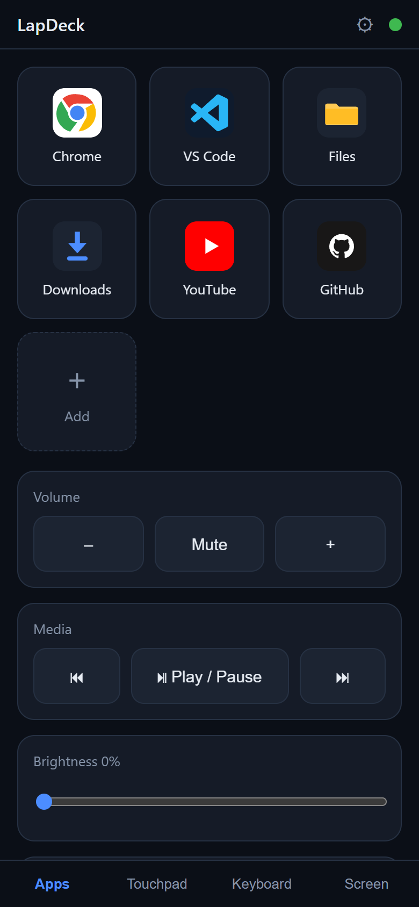
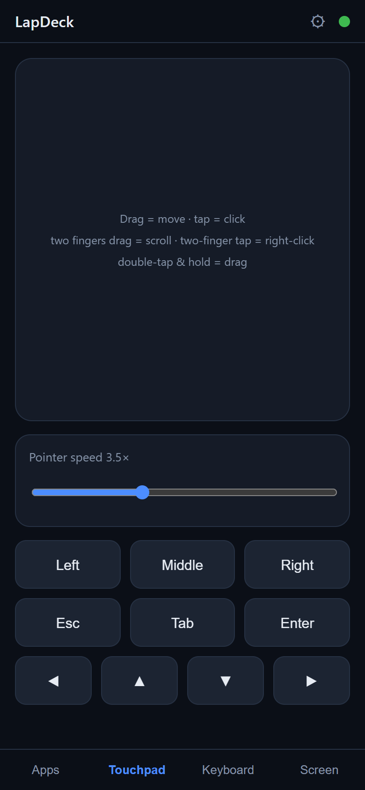
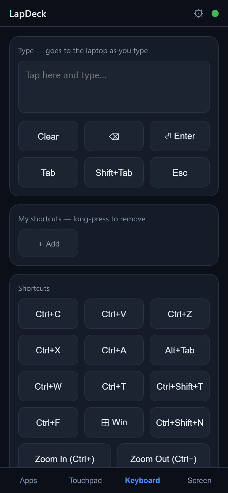
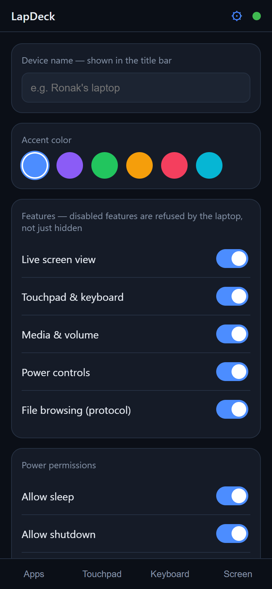

Launcher, touchpad, keyboard, a live screen you can tap, media & volume, brightness, and lock / sleep / shutdown — all from the phone in your hand. One Node.js process on the laptop, a PWA on the phone. Nothing leaves your network.
Browser or installed PWA
One Node.js process on Windows or Linux
Native-feeling, thumb-friendly, and built as a real PWA — add it to your home screen and it opens like an app.




Seven built-in decks. Each feature is a server-enforced switch — turn any of them off and the agent flat-out refuses those commands.
Tiles for apps, folders, files and websites. Add or remove tiles right from the phone, and choose which browser opens a given site — bare names like chrome.exe resolve just like the Run dialog.
Relative pointer with acceleration, tap-to-click, two-finger scroll, two-finger tap for right-click, double-tap-drag, and a speed slider.
Type live into the laptop with IME-safe diffing (swipe-typing works), common shortcuts, and your own chord buttons like ctrl+shift+p.
An MJPEG stream you can tap to click where you tap, with a realtime client-predicted cursor overlay, a magnifier loupe, and low / medium / high quality presets.
Play / pause / next / prev, volume, mute, screen brightness and a battery readout — the transport keys your OS already understands.
Lock, sleep, restart, shutdown — each with a confirm and a configurable abort window so one tap can cancel.
Add free Tailscale and control your laptop from across the world — no port forwarding. The agent detects it and shows a remote QR automatically.
Everything is LAN-local. A constant-time token guards the socket, and it rides in the QR so you scan exactly once.
Requirements: Windows 10/11 or Linux, Node.js ≥ 20, and your phone on the same Wi-Fi.
Grab the repo and pull the dependencies. One command starts the agent.
git clone https://github.com/ronak-create/LapDeck.git
cd LapDeck
npm install
npm startThe terminal prints a QR. Scan it with your phone — the UI opens already paired. The pairing token rides in the link and is stored on the phone, so you only ever scan once.
sudo ufw allow 8765/tcp. That's the #1 cause.
Open your phone browser's menu → Add to Home screen. LapDeck installs as a PWA and launches full-screen, just like a native app.
Drop a tiny hidden launcher into your Startup folder — no admin, no console window. Autostart runs after you log in, because input injection and screen capture need your interactive session.
powershell -ExecutionPolicy Bypass -File scripts\install-autostart.ps1Manage it with scripts\stop-agent.ps1 and scripts\uninstall-autostart.ps1.
LapDeck is LAN-local by default — but add Tailscale, a free zero-config mesh VPN, and your phone reaches the laptop from anywhere: another Wi-Fi, cellular, the other side of the planet. No port forwarding, no router config, no public exposure. Traffic is encrypted end-to-end between your own two devices.
Once both devices are on your tailnet, start the agent as usual — it detects Tailscale and prints a second “remote” QR / URL automatically, right next to the LAN one. Scan whichever fits where you are.
Get Tailscale (free)Install Tailscale for Windows or Linux and sign in with Google, GitHub or Microsoft — one account, no server to run.
Add the Tailscale app and sign in with the same account. Both devices join your private tailnet and get stable 100.x.x.x addresses.
Run npm start. The agent spots the Tailscale interface and shows a remote QR / URL alongside the local one — scan it while you're away.
Bind the agent to just your Tailscale IP so it never listens on public Wi-Fi. Set it in settings.json or via env var:
$env:LC_BIND="100.x.y.z"; npm startOnce you're paired, every screen is driven from the phone. Here's the day-to-day.
Tap a tile to open an app, folder, file or website on the laptop.
A relative pointer surface — move like a laptop trackpad.
Type straight into the laptop; the diffing is IME-safe so swipe-typing works.
ctrl+shift+p) or sequence (ctrl+k,ctrl+o).See the primary display and act on it directly.
Most settings live on the ⚙ Settings screen. The rest sit in data/settings.json, deep-merged over the defaults — you only write the keys you change. Invalid values are clamped back into range on load.
Set before npm start to override server settings.
| LC_PORT | Listen port; overrides settings.port. |
| LC_BIND | Bind address; e.g. a Tailscale IP to listen on that interface only. |
| LC_DATA_DIR | Relocate the whole data/ directory. |
data/ is created on first run and gitignored — it holds your token, settings and launcher tiles.#rrggbb works, not just the swatches.data/settings.json reference{
// Server — these two need an agent restart to apply.
"port": 8765,
"bind": "0.0.0.0", // e.g. a Tailscale IP to listen on that interface only
// Shown as the app title on the phone (empty = "LapDeck").
"deviceName": "",
// Synced UI theme. Any #rrggbb accent works, not just the built-in swatches.
"theme": { "accent": "#4c8dff" },
// Feature switches. A disabled feature's commands are REFUSED by the agent.
"features": {
"screen": true, // live screen view + tap-to-click (+ /stream.mjpeg)
"input": true, // touchpad + keyboard injection
"files": true, // fs.* protocol commands (browse/open)
"media": true, // volume + transport keys
"power": true // lock / sleep / shutdown / restart
},
// Per-action power permissions (only consulted when features.power is on).
"power": {
"allowSleep": true,
"allowShutdown": true,
"allowRestart": true,
"graceSeconds": 5 // 0–60; countdown during which one tap aborts
},
// Screen-view quality presets. fps 1–15, width 480–2560, quality 20–90.
"stream": {
"presets": {
"low": { "fps": 2, "width": 960, "quality": 45 },
"med": { "fps": 4, "width": 1280, "quality": 60 },
"high": { "fps": 6, "width": 1600, "quality": 72 }
}
},
// Custom keyboard buttons. keys = a chord or a comma-separated sequence. Max 30.
"shortcuts": [
{ "id": "a1b2c3d4", "label": "Command Palette", "keys": "ctrl+shift+p" }
]
}data/apps.jsonManaged from the phone, but hand-editable. exec targets resolve like the Run dialog (App Paths), so bare names work without full paths.
[
{ "kind": "exec", "target": "chrome.exe", "args": [] },
{ "kind": "folder", "target": "C:\\dev\\project" },
{ "kind": "file", "target": "C:\\notes.txt" },
{ "kind": "url", "target": "https://youtube.com",
"browser": "chrome", // optional: force a browser
"icon": "youtube.svg" } // public/icons/ file or https URL
]Lock every paired phone out instantly and issue a fresh QR:
data/secret.json.npm start).Want alternative clients (a native app, a CLI, an automation script)? The full WebSocket protocol is simple JSON envelopes, documented in docs/PROTOCOL.md.
src/win/ on Windows, src/linux/ on Linux — behind a shared facade. On Linux both X11 and Wayland work: Wayland uses ydotool for input and grim for screen capture (needs the matching tools installed). macOS is a welcome contribution.sudo ufw allow 8765/tcp. Also confirm the phone is on the same Wi-Fi as the laptop.SetSuspendState hibernates. Run powercfg /h off if you prefer S3 sleep. On Linux, sleep uses systemctl suspend.npm start away.Free, open-source, MIT-licensed. Turn the phone in your hand into the remote your laptop always deserved.